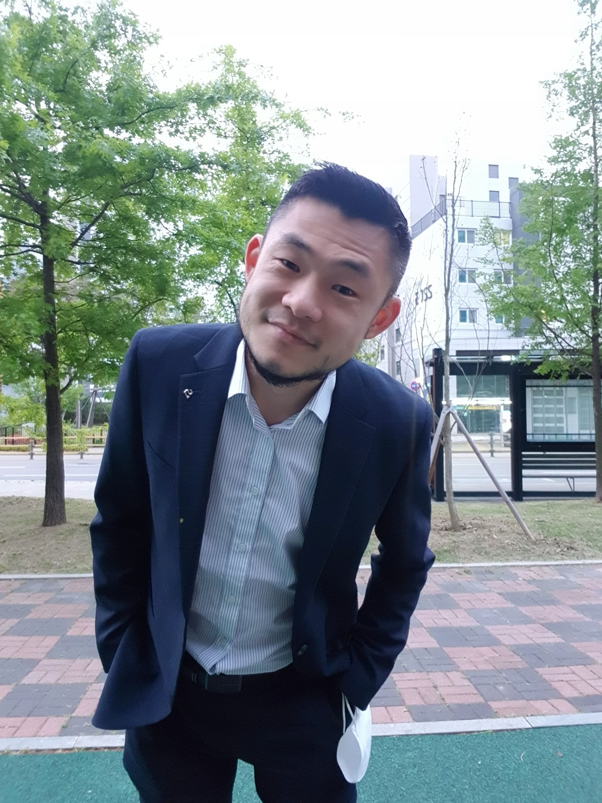

선생님 소개

채권수 선생님
과학과 산업을 좋아하고, 하루하루 새로운 것들을 알아가면서 생각해보고 실행해보는 데 관심이 많습니다. 이러한 것들을 하는 데 가장 중요한 도구 중 하나가 바로 영어로 읽고 소통하는 능력입니다.
MIT CSAIL(컴퓨터과학 및 인공지능 연구소)의 계산인지과학그룹에서는 어떻게 인간의 학습을 컴퓨터 프로그래밍 관점에서 이해해보려고 하는지, Elon Musk(일론 머스크)의 이야기나 그 사람이 운영중인 Neuralink의 사업 내용이 궁금합니다. 또 이미 이 세상에 없어 직접 만날 수는 없지만, Einstein(아인슈타인)의 상대성이론이 어떤 배경에서 탄생했는지, Nike(나이키)의 창업 스토리는 어떻게 되는지 알고싶습니다.
수능 영어 영역의 고득점도 스스로 달성하고 유지할 수 있고, 영어 읽기라는 간접 소통을 통해 내 방에 앉아서 미국도 가고 영국도 가고 200년 전으로도 다녀올 수 있는 힘을 주고 싶습니다. 여러분이 그럴 수 있으면 좋겠습니다. 그래서 읽기혁명을 만들었습니다.
약속
- 과학의 기본 중 하나는 별 다른 근거 없이 확정적으로 이야기하지 않는 것입니다. 사실을 왜곡해서 학생과 학부모를 연혹시킬 수 있는 언어를 멀리하겠습니다.
- "영어 마스터" 같은 허무맹랑한 구호가 아니라, 학생 스스로 수능 시험과 그 이후를 준비 해나갈 수 있는 힘을 기를 수 있도록 가이드하겠습니다.
학력
- [박사 수료] KAIST (대전 본원) 전산학
세부 연구 분야 >> 인공지능 및 기계학습 - [석사 졸업] 고려대학교 (안암) 컴퓨터학
세부 연구 분야 >> 컴퓨터 프로그램 자동 분석 - [학부 졸업] 고려대학교 (안암) 행정학 / 소프트웨어기술과산업 이중 전공
읽기혁명의 커리큘럼에 참여하기를 원하거나 궁금한 것이 있으신가요? 등록안내 탭으로 가서 등록 및 상담 신청을 해보세요.
주요 활동 이력
- [국제 연구 논문 발표] 연구 활동을 하면서 3편의 논문을 국제 주요 학회 및 워크샵에 발표했습니다. 국제 연구 활동을 하는 것은 영어로 전문가들과 교류하는 대표적인 활동 중 하나입니다.
- Che, G. and Yang, H. Meta-Learning an Inference Algorithm for Probabilistic Programs. NeurIPS 2021 AIPLANS Workshop. (논문 보기)
- Lim, H., Che, G., Lee, W., and Yang, H. Differentiable Algorithm for Marginalising Changepoints. AAAI 2020. (논문 보기)
- Chae, K., Oh, H., Heo, K., and Yang, H. Automatically Generating Features for Learning Program Analysis Heuristics for C-Like Programs. OOPSLA 2017. (논문 보기)
- [Oxford 국제 공동 연구] 고려대학교에서 국제 공동 연구 프로젝트를 진행하면서, 2017년도에 Department of Computer Science, University of Oxford에 단기로 방문해서 일했습니다.
- [실리콘 밸리 연수] 대학 학부의 교육 프로그램을 통해서 미국 실리콘밸리의 Google, Apple, Dropbox 등의 기술 회사와 Altos Ventures와 같은 전문투자사를 견학했고, 그 결과를 동료들과 함께 책으로 발표했습니다.
- [미국 어학 연수] 대학 학부 시절 TALK이라는 미국 영어 교육 기관을 통해 미국 Fort Lauderdale, Florida(Google Maps)와 Belmont, California(Google Maps)에서 어학 연수를 했습니다.
- [과외 수업] 서울 지역에서 중고등학생 영어 과외를 다수 진행했습니다.
읽기혁명의 커리큘럼에 참여하기를 원하거나 궁금한 것이 있으신가요? 등록상담 탭으로 가서 등록 및 상담 신청을 해보세요.